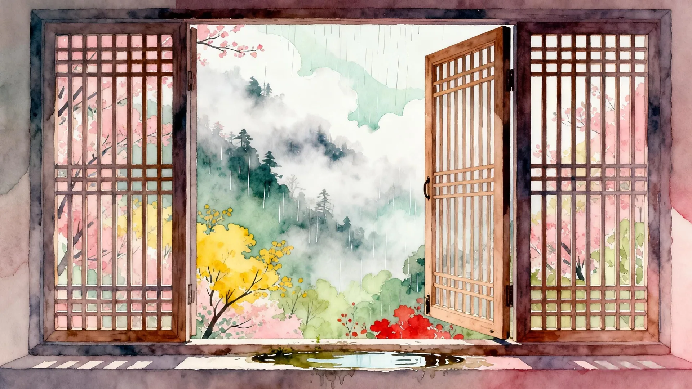
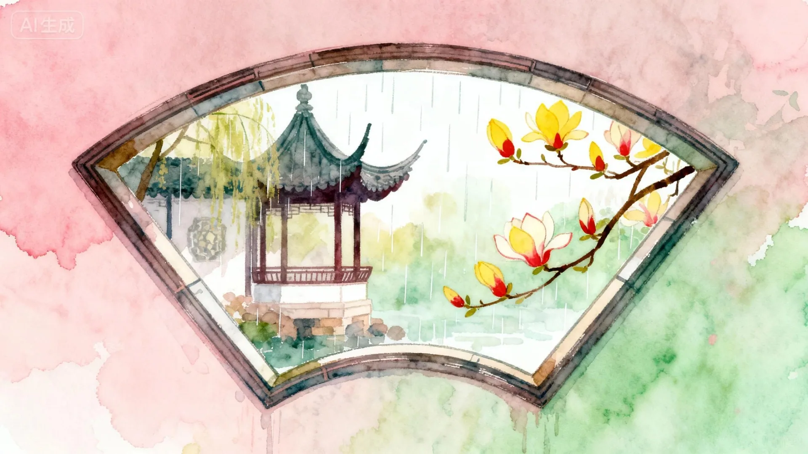
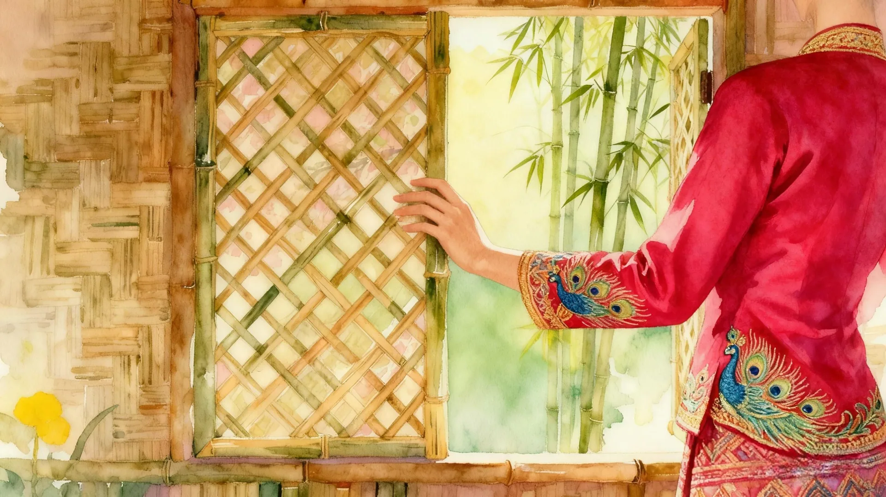
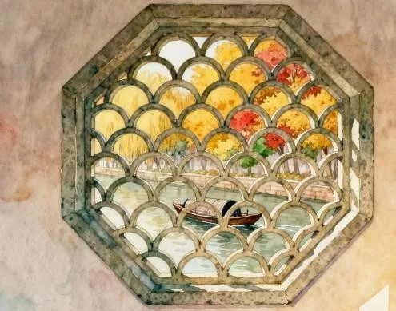

窗间的二十四节气
推开一扇窗，看见春天
窗间的二十四节气
《窗间的二十四节气》是一部“一窗一景”的水彩风格概念动画。作品以传统窗棂为画框，跟随节气轮转推开十六扇窗——从苏州立春的柳岸花开，到新疆立夏的琴声舞影；从海南立秋的海浪轻扬，到北京冬至的红墙落雪。窗内是人间烟火，窗外是四时天光，节气在窗的开合之间缓缓流转，也见证着人与自然、传统与当下的温柔连接。




以窗为眼，依二十四节气为线，在四时流转中，遇见中国乡土的诗意与生活之美。——窗一景，一节一画，也看见人与自然、传统与当下的温柔连接。